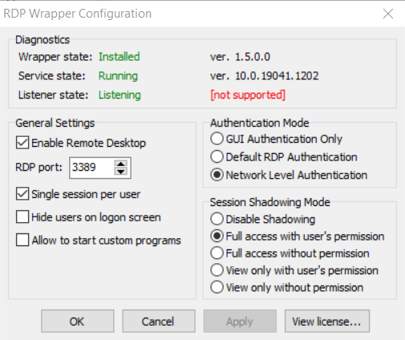
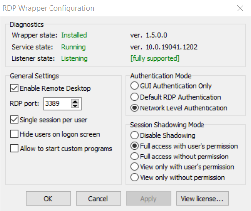

A software that enables remote desktop function on several versions
of operating systems, even allowing mulitple users to log on the same
device simultaneously.
Github-RDPWrap
Usually just follow the instructions.

1b00d45dfad3ef163c3f4c91b4e50233.png
Find the corresponding config and add them in .ini file
in %PROGRAM FILES%
remember to add a blank line break at the end of the file.
1 2 3 4 5 6 7 8 9 10 11 12 13 14 15 16 17 18 19 20 21 22 23 [10.0.19041.1202] LocalOnlyPatch.x64=1 LocalOnlyOffset.x64=89D81 LocalOnlyCode.x64=jmpshort SingleUserPatch.x64=1 SingleUserOffset.x64=0CB26 SingleUserCode.x64=Zero DefPolicyPatch.x64=1 DefPolicyOffset.x64=19105 DefPolicyCode.x64=CDefPolicy_Query_eax_rcx SLInitHook.x64=1 SLInitOffset.x64=1E98C SLInitFunc.x64=New_CSLQuery_Initialize [10.0.19041.1202-SLInit] bInitialized.x64 =107108 bServerSku.x64 =10710C lMaxUserSessions.x64 =107110 bAppServerAllowed.x64 =107118 bRemoteConnAllowed.x64=107120 bMultimonAllowed.x64 =107124 ulMaxDebugSessions.x64=107128 bFUSEnabled.x64 =10712C
to edit rdpwrap.ini you may need to stop the remote
desktop service first.
1 2 3 net stop termservice net start termservice
then run install.bat again.

5d7c8801bea917c2cc9514d6d08b44d3.png
--and it's done.